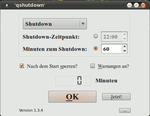
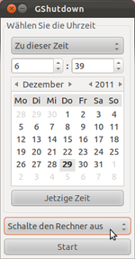
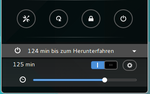
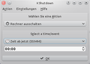

Herunterfahren
Zum Verständnis dieses Artikels sind folgende Seiten hilfreich:
Ein PC ist schnell eingeschaltet. Das Abschalten dagegen kann komplexer sein: Soll es zeitgesteuert sein? Und wie erlaubt man einem Nutzer das Ausschalten, wenn kein Displaymanager diese Funktion global bereitstellt? Im Terminal geht es mit welchem Befehl? Dieser Artikel klärt diese Fragen.
Zeitgesteuert herunterfahren¶
In diesem Abschnitt werden Programme mit grafischer Oberfläche vorgestellt, die das zeitgesteuerte Abschalten des Rechners ermöglichen. Auch per Terminal ist dies mit dem Befehl shutdown möglich.
qshutdown¶
|  |
| qshutdown |
qshutdown ist ein Programm, das den PC zeitgesteuert herunterfahren, neu starten, in den Energiespar- oder Ruhezustand versetzen kann. Man kann sowohl eine Uhrzeit als auch eine Anzahl von Minuten angeben, zu der die entsprechende Aktion ausgeführt werden soll. Wenn nur noch wenig Zeit bis zur gewünschten Aktion verbleibt, warnt das Programm optional durch ein dreimaliges Wiedererscheinen. Mit Hilfe dieses Programms kann man stets die verbleibende Zeit im Auge behalten. Es soll einem ermöglichen, ohne Terminal auszukommen, und vermeidet dabei die wall-Meldung, die beim shutdown-Befehl im Terminal manche Prozesse stören kann. Außerdem benötigt qshutdown in der Regel keine Root-Rechte.
ComplexShutdown & EasyShutdown¶
ComplexShutdown  und EasyShutdown sind Python-Skript, mit denen sich das Herunterfahren bequem mittels einer grafischen, aber englischen Oberfläche automatisieren lässt. Dabei werden verschiedene Optionen angeboten, um dies auch zeitgesteuert zu ermöglichen. Über die Projektseite steht ein Fremdpaket zur Verfügung, das heruntergeladen und manuell installiert werden kann.
und EasyShutdown sind Python-Skript, mit denen sich das Herunterfahren bequem mittels einer grafischen, aber englischen Oberfläche automatisieren lässt. Dabei werden verschiedene Optionen angeboten, um dies auch zeitgesteuert zu ermöglichen. Über die Projektseite steht ein Fremdpaket zur Verfügung, das heruntergeladen und manuell installiert werden kann.
Hinweis!
Fremdpakete können das System gefährden.
|  |
| GShutdown |
GShutdown¶
GShutdown funktioniert nur korrekt mit den Displaymanagern KDM und GDM, also mit Kubuntu, Ubuntu Gnome und Xubuntu und nicht dem Standardubuntu, das LightDM verwendet. GShutdown kann den Rechner zu einem bestimmten Termin herunterfahren, neustarten oder die aktuelle Sitzung beenden.
In Ubuntu 12.04 ist das Programm in den offiziellen Paketquellen enthalten:
gshutdown (Ubuntu 12.04)
 mit apturl
mit apturl
Paketliste zum Kopieren:
sudo apt-get install gshutdown
sudo aptitude install gshutdown
Alternativ kann das Programm von der Download-Seite  von GShutdown heruntergeladen und manuell installiert werden [3]. Nach der Installation kann man das Programm über "Zubehör -> GShutdown" starten.
von GShutdown heruntergeladen und manuell installiert werden [3]. Nach der Installation kann man das Programm über "Zubehör -> GShutdown" starten.
Hinweis!
Fremdpakete können das System gefährden.
|  |
| ShutdownTimer |
ShutdownTimer¶
Wenn man die GNOME Shell benutzt, bietet die Erweiterung ShutdownTimer eine sehr bequeme Möglichkeit, den Rechner zeitgesteuert auszuschalten. Unterhalb der Herunterfahren-Schaltfläche im Statusmenü fügt sich der Menüpunkt ein, mit dem man die Zeit einstellen und den Timer (de-)aktivieren kann.
|  |
| KShutDown |
KShutDown¶
KShutDown ist ein Programm für das automatische Herunterfahren des Systems aus KDE heraus. Das Programm kann jedoch deutlich mehr als nur den Rechner herunterfahren. So kann das Programm z.B. die Internetverbindung zu einem bestimmten Zeitpunkt beenden, die Wiedergabe verschiedener Audio-Player stoppen usw.
Das Programm kann bis inklusive Kubuntu 14.04 direkt aus den Paketquellen von Ubuntu über das folgende Paket installiert werden:
kshutdown (universe )
mit apturl
Paketliste zum Kopieren:
sudo apt-get install kshutdown
sudo aptitude install kshutdown
Nach der Installation kann man das Programm unter "K-Menü -> Dienstprogramme -> KShutDown (System Shut Down Utility)" starten.
Herunterfahren per Terminal¶
Auch aus dem Terminal [4] kann man einen Linux-Rechner (zeitgesteuert) herunterfahren lassen. Hierfür gibt es allgemeine Befehle für die root-Rechte notwendig sind und andere meist von der Oberfläche abhängige Befehle, die mit Benutzerrechten ausgeführt werden können.
Allgemein mit Root-Rechten¶
shutdown¶
Shutdown muss man verschiedene Optionen mitgeben. Möchte man bei sehr alten Rechnern sichergehen, dass der Rechner danach abgeschaltet wird, sollte man die Option -P verwenden (-h überlässt die Wahl dem System).
sudo shutdown -h now # Fährt das System sofort herunter sudo shutdown -P now # Fährt das System sofort herunter und veranlasst die Abschaltung des Rechners sudo shutdown -h 60 # Fährt das System in 60 Minuten herunter sudo shutdown -h 20:30 # Fährt das System um 20:30 Uhr herunter sudo shutdown -r 60 # Fährt das System in 60 Minuten herunter und startet es anschließend neu
Wenn man nun den Timer gestartet hat, es sich aber doch anders überlegt und den Computer weiterhin benutzen möchte, so muss man das Herunterfahren des Rechners mittels
sudo shutdown -c
abbrechen.
halt / reboot¶
Alternativ kann man auch die Befehle
sudo halt -p
zum sofortigen Herunterfahren und
sudo reboot
für einen Neustart nutzen.
Mit Benutzerrechten¶
Die "sudoers" Methode¶
Möchte man den Befehl shutdown in einem Skript benutzen oder anderen Benutzern ermöglichen (die dazu keine Root-Rechte auf dem Rechner bekommen sollen), den Rechner per shutdown herunterzufahren, so ist dies problematisch. Der Befehl braucht Root-Rechte. Man kann jedoch einzelnen Benutzern ermöglichen, shutdown auszuführen, ohne ein Passwort einzugeben zu brauchen. Hierzu muss sudo über den Befehl [4]
sudo visudo
konfiguriert und die Zeilen
# User alias specification User_Alias ABSCHALTER = otto, anna, berta # Cmnd alias specification Cmnd_Alias DOWN = /sbin/shutdown, /sbin/halt, /sbin/reboot # User privilege specification ABSCHALTER ALL = NOPASSWD: DOWN
(am Ende der Datei) eingefügt werden. In diesem Beispiel würden die drei Benutzer otto, anna, berta den Rechner über z.B.
sudo shutdown -h now
herunterfahren können, ohne dass sie nach einem Passwort gefragt werden.
Eine andere einfache Lösung besteht darin, jedem Benutzer das Recht zum Ausführen des shutdown-Befehls einzuräumen, in man das entsprechende SUID-Bit, wie in chmod beschrieben, setzt:
sudo chmod +s /sbin/shutdown
Dieses Vorgehen ist meist nur bei Desktop-Systemen mit einem einzigen Benutzer sinnvoll.
Die D-Bus Methode¶
Um über D-Bus herunterfahren zu können, gibt es verschiedene Schnittstellen, die angesprochen werden können (siehe z.B. nachfolgend unter GNOME etc.). Über ConsoleKit gibt es eine Methode, die prinzipiell bei allen Systemen funktioniert, die das Paket consolekit installiert haben.
dbus-send --system --print-reply --dest=org.freedesktop.ConsoleKit /org/freedesktop/ConsoleKit/Manager org.freedesktop.ConsoleKit.Manager.Stop #zum Herunterfahren dbus-send --system --print-reply --dest=org.freedesktop.ConsoleKit /org/freedesktop/ConsoleKit/Manager org.freedesktop.ConsoleKit.Manager.Restart #zum Neustarten
GNOME¶
gnome-session-quit --power-off # Zeigt den Dialog zum Ausschalten, Neustarten usw. an. gnome-session-quit --logout # Zeigt den Dialog zum Abmelden oder Benutzerwechsel an. gnome-session-quit --logout --no-prompt # Meldet jetzt den Benutzer direkt ab (sofern dies nicht von einem Programm verhindert wird).
Siehe auch gnome-session-quit --help-all.
Xfce¶
Wenn man Xfce ohne GDM startet, wird beim Klicken auf "Herunterfahren" oder "Neustart" das Passwort abgefragt. Dies lässt sich wie folgt umgehen:
Die Datei /etc/sudoers mit [4]
sudo visudo
bearbeiten. Folgender Text muss hinzugefügt werden, wobei BENUTZERNAME durch den eigenen Benutzernamen ersetzt wird und genauso der Hostname:
BENUTZERNAME HOSTNAME=NOPASSWD:/usr/sbin/xfsm-shutdown-helper
KDE¶
Kubuntu kann man u.a. über den Session-Manager via D-Bus herunterfahren.
dbus-send --print-reply --dest=org.kde.ksmserver /KSMServer org.kde.KSMServerInterface.logout int32:0 int32:2 int32:2 # D-Bus-Befehl zum sofortigen Abschalten dbus-send --print-reply --dest=org.kde.ksmserver /KSMServer org.kde.KSMServerInterface.logout int32:1 int32:1 int32:1 # D-Bus-Befehl um jetzt einen Neustart zu versuchen
Die drei Parameter am Ende haben folgende Funktionen:
Parameter 1: Bestätigungsabfrage (0 = nein, 1 = ja)
Parameter 2: Modus (0 = einplanen, 1 = jetzt versuchen, 2 = erzwingen)
Parameter 3: Methode (0 = abmelden, 1 = neustarten, 2 = herunterfahren)
Weitere Informationen findet man hier.
Server mittels ACPI herunterfahren¶
Für kleine Heimserver ist es möglicherweise interessant, diese auch über den Einschalter am PC-Gehäuse herunterzufahren. Das erspart eventuell ungeübten Benutzern, am Server den Monitor einzuschalten, sich anzumelden und dann den Befehl sudo halt zum Herunterfahren einzugeben. Durch Installation des Paketes acpid können auch Rechner ohne grafische Oberfläche heruntergefahren werden. Bei Rechnern mit grafischer Oberfläche ist das Paket normalerweise dabei, ansonsten muss es installiert werden und kann dann sofort verwendet werden.
acpid
mit apturl
Paketliste zum Kopieren:
sudo apt-get install acpid
sudo aptitude install acpid
Achtung!
Wichtig ist noch, den Schalter nicht länger als 5 Sekunden gedrückt zu halten. Ansonsten schaltet sich das Netzteil hart ab und kann so einen Datenverlust verursachen. Gegen unabsichtliches Drücken des Schalters schützt ein eigener Serverschrank oder eine ähnliche Maßnahme.
Ungewolltes Abschalten vermeiden¶
Arbeitet man in einem Netzwerk mit mehreren Rechnern, die man per SSH steuert, so kann es leicht zu Verwechselungen kommen, so dass man aus Versehen den falschen Rechner herunterfährt. Dieses kann man mit dem Paket
molly-guard (universe)
mit apturl
Paketliste zum Kopieren:
sudo apt-get install molly-guard
sudo aptitude install molly-guard
vermeiden. Hat man molly-guard auf einem Rechner installiert [1], auf dem man sich per SSH angemeldet hat, und fährt den Rechner herunter, so wird man nach dem Hostnamen des Rechners gefragt. Erst wenn man diesen korrekt eingegeben hat, wird der Rechner tatsächlich heruntergefahren.
sudo shutdown -h now
W: molly-guard: SSH session detected! Please type in hostname of the machine to shutdown:
Ist man lokal angemeldet, so beeinflusst molly-guard das Herunterfahren nicht.
Ist man per SSH angemeldet, arbeitet jedoch mit SCREEN in einer virtuellen Konsolensitzung, so wird beim Herunterfahren nicht nach dem Rechnernamen gefragt. Möchte man trotzdem gefragt werden, kann man ab Ubuntu "Intrepid Ibex" 8.10 in der Datei /etc/molly-guard/rc folgenden Wert eintragen bzw. auskommentieren.
ALWAYS_QUERY_HOSTNAME=true
Nach dieser Änderung wird bei jedem Herunterfahren nach dem Hostnamen gefragt, auch in einer lokalen Sitzung.
Problembehebung¶
Rechner schaltet sich nicht ab¶
Es kommt vor, dass sich der Rechner nach dem Herunterfahren nicht abschaltet. Man bekommt dann die Meldung, dass man den Rechner nun abschalten kann. Erst wenn man den Taster am Rechner betätigt, schaltet sich der Rechner ab. Um dieses zu lösen, kann man verschiedene Dinge probieren.
ACPI erzwingen¶
Es kommt vor, dass Ubuntu nicht erkennt, dass der Rechner ACPI-Funktionen bietet. Dann kann man Ubuntu dazu zwingen, ACPI zu nutzen. Man bearbeitet, wie in Grub 2 Konfiguration beschrieben, die Datei /etc/default/grub, wobei die Zeile
GRUB_CMDLINE_LINUX_DEFAULT="quiet splash"
um die Option acpi=force ergänzt wird:
GRUB_CMDLINE_LINUX_DEFAULT="quiet splash acpi=force"
Nun aktualisiert man die Konfiguration von Grub mittels des Befehls [4]
sudo update-grub
Nach dem nächsten Neustart schaltet sich der Rechner nun korrekt ab.
Behilfs-Bootoptionen der Installation löschen¶
Bei der Installation des Betriebssystems kann es zu Problemen kommen, so das man mit geeigneten Bootoptionen den Systemstart beeinflussen muß. Diese Optionen werden in die Datei /etc/default/grub des Installierten Systems übertragen, damit nach Installation das System ohne weitere Eingriffe starten kann. In der Regel werden solche Behilfs-Bootoptionen nach einer Aktualisierung bzw. nach einem Update überflüssig und sollten dann entfernt werden, da diese zum Beispiel das automatisierte Herunterfahren und Ausschalten des Computers verhindern können.
Dazu bearbeitet man, wie in Grub 2 Konfiguration beschrieben, die Datei /etc/default/grub.
Beispielauszug der Datei /etc/default/grub unmittelbar nach der Installation mit Behilfs-Bootoptionen:
GRUB_CMDLINE_LINUX_DEFAULT="quiet splash" GRUB_CMDLINE_LINUX="priority=low acpi=off noapic nolapic nomodeset"
Beispielauszug der Datei /etc/default/grub mit den im Idealfall nötigsten Bootoptionen:
GRUB_CMDLINE_LINUX_DEFAULT="quiet splash" GRUB_CMDLINE_LINUX=""
Es sei an dieser Stelle nochmals darauf hingewiesen, das im Standard Boot-Login beide Zeilen zum einen GRUB_CMDLINE_LINUX_DEFAULT und zum anderen GRUB_CMDLINE_LINUX berücksichtigt und Verarbeitet werden. Siehe hierzu auch den Abschnitt Dauerhafte Konfiguration eines Systems.
Abschließend aktualisiert man die Konfiguration von Grub mittels des Befehls [4]
sudo update-grub
Nach dem nächsten Neustart schaltet sich der Rechner nun korrekt ab.
Power-Off über APM¶
Alternativ kann man Ubuntu anweisen, dass es speziell zum Abschalten des Rechners das veraltete APM nutzen soll. Dieses Verfahren wird heutzutage nicht mehr genutzt, kann aber bei sehr alter Hardware oder ACPI-Problemen eine Lösung sein. Dazu editiert man, wie bei ACPI erzwingen beschrieben, die Konfigurationsdatei von GRUB oder GRUB 2 und fügt apm=power_off ein. Die Schreibweisen power-off und poweroff sind Synonyme, funktionieren also ebenfalls.
Danach muss GRUB 2 noch aktualisiert werden:
sudo update-grub
Anschließend muss dem APM-Kernelmodul noch mitgeteilt werden, dass es den Rechner abschalten soll. Dazu muss die Datei /etc/modules mit Root-Rechten bearbeitet [5] und die Zeile
apm power_off=1
eingefügt werden. Mit einem Neustart des Systems kann der Erfolg der Maßnahme überprüft werden.
"HDA"(High Definition Audio) abschalten¶
Laut Berichten aus dem Forum scheint es Probleme mit manchen Intel-Chipsätzen zu geben. Die Kernelmodule snd_hda_intel sowie snd_hda_codec können das ACPI wohl so "durcheinander" bringen, dass der Rechner sich nicht ausschalten kann. Um das Problem zu lösen, muss man ein Skript anlegen, das die Module vor dem Herunterfahren entfernt werden.
Prüfen¶
Als erstes muss man prüfen, ob das Modul überhaupt verwendet wird:
lsmod | grep snd_hda_intel
Wird das Modul verwendet, kann man fortfahren.
Skript erstellen¶
Mit einem Editor mit Root-Rechten [5] erzeugt man das Skript /etc/init.d/intelaudio und träge Folgendes ein.
#!/bin/sh rmmod -f snd_hda_intel exit 0
Damit das Skript ausgeführt werden kann, muss man es anschließend mittels
sudo chmod +x /etc/init.d/intelaudio
ausführbar machen.
Beim Herunterfahren ausführen¶
Experten-Info:
Damit das Skript funktioniert, muss es nach dem Entladen des Soundsystems (ALSA) gestartet werden. Beim Herunterfahren werden die Skripte in /etc/rc0.d/ alphabetisch abgearbeitet. Standardmäßig wird ALSA über das Skript K50alsa-utils entladen. Darum sollte der Link S51intelaudio heißen. (K steht für Kill und S für Start)
Jetzt muss das System erfahren, dass das Skript beim Herunterfahren ausgeführt werden soll. Hierfür gibt es das Programm update-rc.d, das die Skripte aus /etc/init.d/ in die jeweiligen Runlevel-Verzeichnisse (/etc/rc0.d/ bis /etc/rcS.d/) verlinkt und ihnen einen Platz in der Ausführungsreihenfolge zuweist. Mit
sudo update-rc.d intelaudio start 51 0 6 . # Der Punkt am Ende ist wichtig!
wird das Skript intelaudio auf Platz 51 in den "run levels" 0 und 6 ("Shutdown" und "Reboot") gestartet.
Links¶
Skripte/Auto OFF - automatisches Abschalten eines Computers bei Nichtbenutzung (Shell-Skript)
Gpoweroff Shutdown utility
- auf GShutdown basierendes ProgrammKinder - Nutzungszeit des Computers einschränken
- Erstellt mit Inyoka
-
 2004 – 2017 ubuntuusers.de • Einige Rechte vorbehalten
2004 – 2017 ubuntuusers.de • Einige Rechte vorbehalten
Lizenz • Kontakt • Datenschutz • Impressum • Serverstatus -
Serverhousing gespendet von